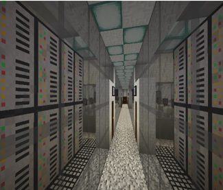
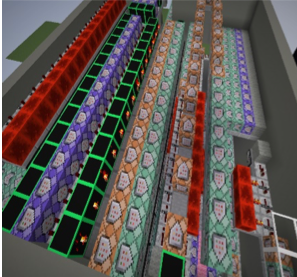
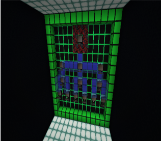
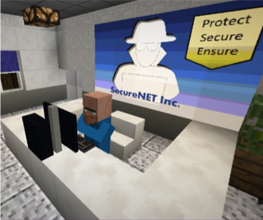

SecureNET: The Grey Hat Origins
Developer: Stephanie Vaccaro — Faculty Advisor: Kevin Jin
Download the game (click here)
Game Settings
- Play on Minecraft Version 1.12.2
- Play on Normal Difficulty
- Play in Adventure Mode
- Particles & Sound ON
- Auto-Jump OFF
- Check Texture Pack
- To advance text click >>>
- Have fun!
Software Used
Screenshots



